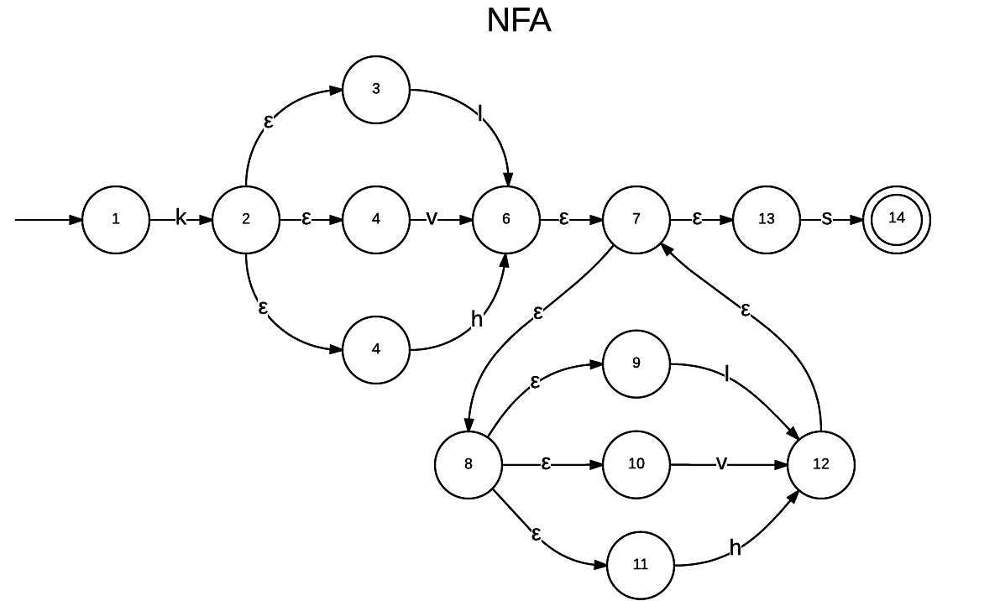
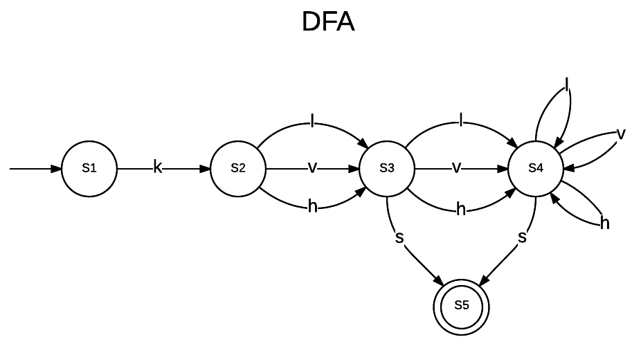
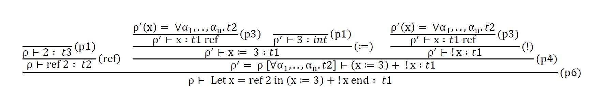

Jeg erklærer hermed at jeg selv har lavet hele denne eksamensbesvarelse uden hjælp fra andre.
Udtrykket matcher sprog som starter med k. Efter k skal et vilkårligt antal på mindst 1, af enten l, v eller h optræde. Sproget skal afsluttes med et s.
Jeg har baseret løsningen ud fra metoden beskrevet i Basics of Compiler Design. Muligvis kan man ikke lave denne ræcise opbygning for sammenkædede | konstruktioner, og de kunne være blevet splitet ud således at a|b hvor b = c|d. Jeg har taget udgangspunkt i at + svarer overens til: aa*
Den udarbejdede NFA kan ses på figuren herunder.

Som det kan ses på figuren er startstaten 1 og acceptstaten 14.
Jeg har benyttet mig af algoritemn beskrevet i Basics of Compiler Design. Algoritmens resultat kan ses i tabellen herunder
| State | k | l | v | h | s | NFA states |
|---|---|---|---|---|---|---|
| S1 | S2 | Ø | Ø | Ø | Ø | 1 |
| S2 | Ø | S3 | S3 | S3 | Ø | 2, 3, 4, 5 |
| S3 | Ø | S4 | S4 | S4 | S5 | 6, 7, 8, 9, 10, 11, 13 |
| S4 | Ø | S4 | S4 | S4 | S5 | 7, 8, 9, 10, 11, 12, 13 |
| S5 | Ø | Ø | Ø | Ø | Ø | 14 |
På figuren herunder ses den udarbejdede DFA.

Jeg har udarbejdet følgende regex: (l|hl|vl)+ Den matcher på alle de strenge der er givet i opgave beskrivelsen, samt undgår at matche på de: lv, lh, lvv, lvh, lhv og lhh.
Ændringer i Absyn:
type expr =
| CstI of int
| CstB of bool
| Var of string
| Let of string * expr * expr
| Prim of string * expr * expr
| If of expr * expr * expr
| Letfun of string * string * expr * expr (* (f, x, fBody, letBody) *)
| Call of expr * expr
| Ref of expr
| Deref of expr
| UpdRef of expr * expr
Ændringer i HigherFun type value = | Int of int | Closure of string string expr value env ( (f, x, fBody, fDeclEnv) *) | Refvalue of value ref
Ændringer i HigherFun
let rec eval (e : expr) (env : value env) : value =
match e with
...
| Ref e -> RefVal (ref (eval e env))
| Deref e -> let value = eval e env
match value with
| RefVal refv -> !refv
| _ -> failwith "Deref did not get a refvalue"
| UpdRef (e1,e2) -> let value1 = eval e1 env
match value1 with
| RefVal refv -> let value2 = eval e2 env
refv := value2
value2
| _ -> failwith "Updref did not get a refvalue"
Der er altså tilføjet 3 nye matches. Disse matches håndterer hver af de nye expr typer.
Ref e: returnerer en RefVal med resultatet af den evaluerede e i det nuværende environment refereret til med en F# reference.Deref e: evaluerer e i det nuværende environment og matcher det med en RefVal. I dette tilfælde benyttes F# deref notationen !ref til at returnere værdien i RefVal uden at det er en reference.UpdRed (e1, e2): Først tjekkes det at e1 er en RefVal type ligesom i Deref. Herefter evalueres e2 i det nye environment, og værdien i e1 referencen updateres med F# update ref notation :=.> run (Letfun ("f", "x", Deref(Var "x"), Call(Var "f", Ref(CstI 1))));;
val it : HigherFun.value = Int 1
> run (Deref(Ref(UpdRef(Ref(UpdRef(Ref(CstI 1),CstI 2)),CstI 3))));;
val it : HigherFun.value = Int 3
> run (Let("x", Ref(CstI 1), UpdRef(Var "x", CstI 2)));;
val it : HigherFun.value = Int 2
> run (Prim("=", CstI 2, Deref(Ref(Prim("+", CstI 1, CstI 1)))));;
val it : HigherFun.value = Int 1
Ændringer i FunLex.fsl
let keyword s =
match s with
...
| "ref" -> REF
| _ -> NAME s
rule Token = parse
...
| '!' { EXMARK }
| ":=" { UPDOP }
| eof { EOF }
| _ { failwith "Lexer error: illegal symbol" }
Ændringer i FunLex.fsy
%token UPDOP EXMARK REF
%left ELSE /* lowest precedence */
%left EQ NE UPDOP
%right REF EXMARK
%nonassoc GT LT GE LE
%left PLUS MINUS
%left TIMES DIV MOD
%nonassoc NOT /* highest precedence */
Expr:
...
| Ref UPDOP Expr { UpdRef($1, $3) }
;
AtExpr:
Const { $1 }
| NAME { Var $1 }
| REF Expr { Ref $2 }
| EXMARK Expr { Deref $2 }
| LET NAME EQ Expr IN Expr END { Let($2, $4, $6) }
| LET NAME NAME EQ Expr IN Expr END { Letfun($2, $3, $5, $7) }
| LPAR Expr RPAR { $2 }
;
Eksempler fra sektion 2.3
> fromString "let x = ref 1 in if !x=1 then x:= 2 else 42 end";;
val it : Absyn.expr = Let ("x",Ref (CstI 1), If (Prim ("=",Deref (Var "x"),CstI 1),UpdRef (Var "x",CstI 2),CstI 42)
> run it;;
val it : HigherFun.value = Int 2
> fromString "let x = ref 2 in (x:=3) + !x end";;
val it : Absyn.expr = Let ("x",Ref (CstI 2),Prim ("+",UpdRef (Var "x",CstI 3),Deref (Var "x")))
> run it;;
val it : HigherFun.value = Int 6
Egne eksempler fra sektion 2.4
> fromString "let f x = !x in f ref 1 end";;
val it : Absyn.expr = Letfun ("f","x",Deref (Var "x"),Call (Var "f",Ref (CstI 1)))
> run it;;
val it : HigherFun.value = Int 1
> fromString "!(ref ((ref ((ref 1):=2)):=3))";;
val it : Absyn.expr = Deref (Ref (UpdRef (Ref (UpdRef (Ref (CstI 1),CstI 2)),CstI 3)))
> run it;;
val it : HigherFun.value = Int 3
> fromString "let x = ref 1 in x:=2 end";;
val it : Absyn.expr = Let ("x",Ref (CstI 1),UpdRef (Var "x",CstI 2))
> run it;;
val it : HigherFun.value = Int 2
> fromString "2=!(ref (1+1))";;
val it : Absyn.expr = Prim ("=",CstI 2,Deref (Ref (Prim ("+",CstI 1,CstI 1))))
> run it;;
val it : HigherFun.value = Int 1
Det udarbejdede typetræ kan ses på figuren herunder

Altså ses det at den endelige type er: int. Der er også overenstemmelse mellem de værdier der udledes af regel 1 og de værdier x bliver slået op til at være med regel p3. Jeg har ikke sat int værdierne ind på alle pladserne for at vise processen, men de værdier der står i punkterne herover kunne sættes direkte ind på deres respektive pladser.
Ændringer i Absyn.fs
and expr =
| Access of access (* x or *p or a[e] *)
| Assign of access * expr (* x=e or *p=e or a[e]=e *)
| Addr of access (* &x or &*p or &a[e] *)
| CstI of int (* Constant integer *)
| CstN (* Constant nil *)
| CstS of string (* Constant string *)
...
Ændringer i CPar.fsy
AtExprNotAccess:
Const { CstI $1 }
| CSTSTRING { CstS $1 }
...
;
Ændringer i Comp.fs
and cExpr (e : expr) (varEnv : varEnv) (funEnv : funEnv) : instr list =
match e with
| Access acc -> cAccess acc varEnv funEnv @ [LDI]
| Assign(acc, e) -> cAccess acc varEnv funEnv @ cExpr e varEnv funEnv @ [STI]
| CstI i -> [CSTI i]
| CstN -> [NIL]
| CstS s -> [CSTS s]
Ændringer i Machine.fs
type instr =
...
| SETCDR (* set second field of cons cell *)
| CSTS of string (* add string on the stack *)
let CODECSTS = 32;
let makelabenv (addr, labenv) instr =
match instr with
...
| SETCDR -> (addr+1, labenv)
| CSTS s -> (addr+(2 + (String.length s)), labenv)
let explode s = [for c in s -> int c]
let rec emitints getlab instr ints =
match instr with
...
| SETCDR -> CODESETCDR :: ints
| CSTS s -> CODECSTS :: (String.length s) :: ((explode s) @ ints)
Ændringer i listmachine.c
#define STRINGTAG 1
#define CSTS 32
void printInstruction(int p[], int pc) {
switch (p[pc]) {
case CSTI: printf("CSTI %d", p[pc+1]); break;
case CSTS: printf("CSTS %d", p[pc+1]); break;
...
int execcode(int p[], int s[], int iargs[], int iargc, int /* boolean */ trace) {
...
case CSTS: {
int lenStr = p[pc++];
int sizeStr = lenStr + 1; // Extra for zero terminating string, \0.
int sizeW = (sizeStr % 4 == 0)?sizeStr/4:(sizeStr/4)+1; // 4 chars per word
sizeW = sizeW + 1; // Extra for string length.
word* strPtr = allocate(STRINGTAG, sizeW, s, sp);
s[++sp] = (int)strPtr;
strPtr[1] = lenStr;
char* toPtr = (char*)(strPtr+2);
for (int i=0; i<lenStr; i++)
toPtr[i] = (char) p[pc++];
toPtr[lenStr] = '\0'; // Zero terminate string!
printf ("The string \"%s\" has now been allocated.\n", toPtr); /* Debug */
} break;
default:
printf("Illegal instruction %d at address %d\n", p[pc-1], pc-1);
return -1;
}
}
}
Jeg er kommet frem til at CSTS s i makelabenv skal bruge addr + 2 + længden af strengen eftesom at det i opgavebeskrivelsen er nævnt at hvert tegn bruger et ord og at en streng har header der fylder 1 ord og længden af strengen der også fylder 1.
Resultatet af kørslen af testprogrammet giver:
listmachine Opgave3Tests.out
The string "Hi there" has now been allocated.
The string "Hi there again" has now been allocated.
Used 0.000 cpu seconds
Dette er den abstrakte syntaks der bliver dannet af parseren givet det eksempel der stod i opgaveteksten.
Prog
[Fundec
(null,"main",[],
Block
[Dec (TypD,"s1"); Dec (TypD,"s2");
Stmt (Expr (Assign (AccVar "s1",CstS "Hi there")));
Stmt (Expr (Assign (AccVar "s2",CstS "Hi there again")))])]
De sidste to statements tildeller strengene som CstS værdier, hvilket er forventet.
Note: Jeg blev nød til at flytte min kode over på en linux maskine og compile både mit eksempel med listcc. Det skyldes en bug på windows. Diskussions forums løsningen fra November hjalp kun til at compile selve listmachine.c men ikke at benytte den efterfølgende.
Ændringer i CLex.fsI
rule Token = parse
...
| "!" { NOT }
| ".<" { DOTLT }
| ".>" { DOTGT }
| ".<=" { DOTLE }
| ".>=" { DOTGE }
| ".==" { DOTEQ }
| ".!=" { DOTNE }
| '(' { LPAR }
...
Ændringer i CPar.fsy
%right ASSIGN /* lowest precedence */
%nonassoc PRINT
%left SEQOR
%left SEQAND
%left EQ NE DOTEQ DOTNE
%nonassoc GT LT GE LE DOTGT DOTLT DOTLE DOTGE
%left PLUS MINUS
%left TIMES DIV MOD
%nonassoc NOT AMP
%nonassoc LBRACK /* highest precedence */
ExprNotAccess:
...
| Expr Check Expr Check Expr { Andalso(Prim2($2,$1,$3), Prim2($4,$3,$5)) }
;
Check:
DOTLT { "<" }
| DOTGT { ">" }
| DOTLE { "<=" }
| DOTGE { ">=" }
| DOTEQ { "==" }
| DOTNE { "!=" }
;
Løsningen består altså af en række nye tokens tilsvarende de forskellige boolske operatorer. Derudover har parseren fået en ny gruppe: CHECK som returnerer en string med deres tilsvarende operator. Denne kan hefter ligges ind i en Prim2 da denne tager imod string notation af operatorerne. I ExprNotAccess gruppen er der tilføjet et enkelt match som er i formen af interval check. Den første og midterste expr bliver kædet sammen til en prim2 med den første check operator. Den midterste og sidste expr bliver kædet sammen af den anden check operator. Et Andalso binder de to primgrupper sammen.
Jeg har lavet testkoden Opgave4-2-Tests.c
void main() {
print 2 .< 3 .< 4;
print 3 .< 2 .== 2;
print 3 .> 2 .== 2;
print (3 .> 2 .== 2) == (3 .> 1 .== 1);
print (3 .> 2 .== 2) == 1;
// prints 1 0 1 1 1
println; // True true
print -1 .< 2 .> -2;
print 1 .== 1 .!= 2;
print 1+4 .>= 5-1 .<= 100-10;
print (1 .== 1 .== 1) .== 1 .< 3;
// prints 1 1 1 1
println; // false false
print -1 .> 2 .< -2;
print 1 .!= 1 .== 2;
print 1+4 .<= 5-1 .>= 100-10;
// prints 0 0 0
println; // true false
print -1 .< 2 .< -2;
print 1 .== 1 .== 2;
print 1+4 .>= 5-1 .>= 100-10;
// prints 0 0 0
println; // false true
print -1 .> 2 .> -2;
print 1 .!= 1 .!= 2;
print 1+4 .<= 5-1 .<= 100-10;
// prints 0 0 0
int x;
x = 5;
println; // True true
print x .== x .== x;
print x .== 5 .== x;
print 5 .== x .== 5;
// prints 1 1 1
}
For at køre det har jeg:
fslex --unicode CLex.fsl
fsyacc --module CPar CPar.fsy
fsi -r %HOMEDRIVE%%HOMEPATH%/FsYacc/Bin/FsLexYacc.Runtime.dll Absyn.fs CPar.fs CLex.fs Parse.fs Machine.fs Comp.fs ParseAndComp.fs"
open ParseAndComp;;
compileToFile (fromFile "Opgave4-2-Tests.c") "tests.out";;
#q;;
og så kørt det i javamaskinen.
javac Machine.java
java Machine tests.out
Hvilket giver de rigtige resultater.
Note: linjen "print (1 .== 1 .== 1) .== 1 .< 3;" er lidt et misbrug af typer eftersom at vi benytter os af at true svarer til 1 og derfor er det ligemed 1.